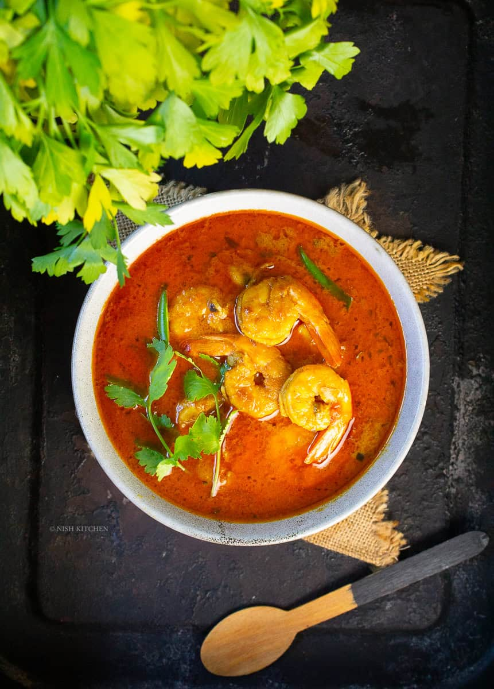
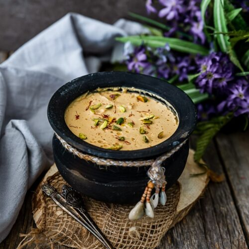

Serving Size:Serves 4
Prep Time:
15 min
Cook Time:
25 min
Total Time:
40 min
Ingredients:
• 500g jumbo prawns, cleaned and deveined
• 2 cups coconut milk
• 2 onions, made into paste
• 2 tbsp ginger paste
• 1 tbsp garlic paste
• 2 green chilies, slit
• 2 bay leaves
• 1/2 tsp turmeric powder
• 1/2 tsp sugar
• 1/2 tsp salt
• 3 tbsp mustard oil
• 1/2 tsp Bengali garam masala
`,
`
Instructions:
1. Marinate prawns with turmeric and salt for 10 min.
2. Heat mustard oil in a pan. Add bay leaves, sauté 30 sec.
3. Add onion paste, cook until golden. Add ginger and garlic paste, sauté 2 min.
4. Add prawns, cook 2-3 min until they turn pink.
5. Add coconut milk, green chilies, sugar. Simmer 10 min on low heat.
6. Sprinkle garam masala, cook 2 min. Serve hot with steamed rice.`)">
Chingri Malai Curry
Serving Size:Serves 6
Prep Time:
10 min
Cook Time:
30 min
Total Time:
8-10 hrs (including setting time)
Ingredients:
• 1 liter full-fat milk
• 1/2 cup sugar
• 2 tbsp yogurt culture
• 2 tbsp date palm jaggery (optional)
• Earthen pots for setting
`,
`
Instructions:
1. Boil milk in a heavy pan, stirring, until reduced by half (about 20 min).
2. Add sugar, stir until dissolved. Cool to lukewarm.
3. Add yogurt culture, mix well. Add jaggery if using.
4. Pour into earthen pots, cover, and keep in a warm place for 8-10 hrs to set.
5. Refrigerate once set. Serve chilled.`)">
Mishti Doi